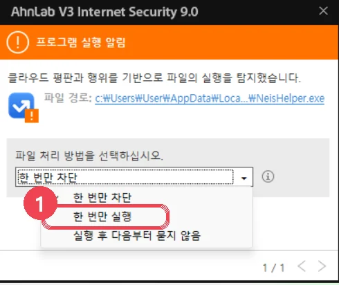
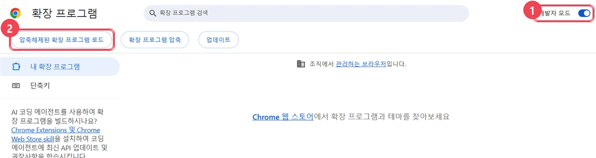
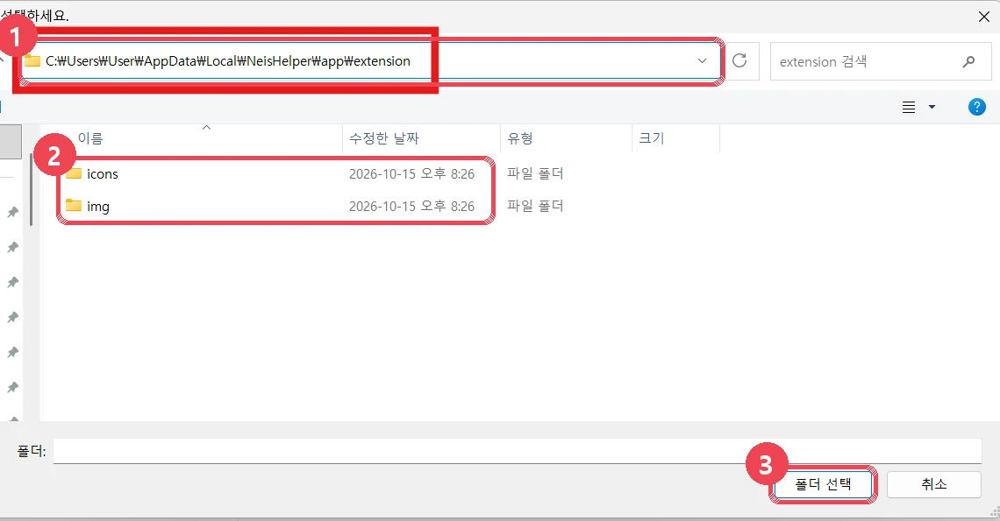

5분이면 끝, 처음 한 번만
설치 파일 실행 → 브라우저에 확장 등록 → 비밀번호·PIN 저장. 새 버전이 나오면 아이콘에 NEW로 알려 줘요.
0.14 이하에서 올라왔다면 처음 설정 화면이 나와요. 인증서 비밀번호와 PIN을 한 번만 다시 저장해 주세요.
① 새 설치 파일 받기 → ② 받은 파일 실행 → ③ 끝. 1분 안에 쌤패스가 스스로 새 버전으로 바뀌어요.
구글 드라이브에서 받기
1설치 파일 받기
아래 버튼을 누르면 구글 드라이브가 새 탭으로 열려요. 쌤패스-설치-버전.exe 파일을 받아 주세요.
2설치 파일 실행 · 경고창이 뜨면
받은 파일을 두 번 클릭해요. 관리자 권한은 필요 없어요. 끝나면 이 페이지가 다시 열리고 폴더 경로가 복사돼요.
"Windows의 PC 보호" 파란 창
- 창 안의 추가 정보 글자를 누르면
- 오른쪽 아래에 [실행] 버튼이 생겨요. 눌러 주세요.
안랩 V3 "프로그램 실행 알림" (주황색 창)
설치 파일을 실행할 때 뜰 수 있어요. 기본 선택이 [한 번만 차단]이라 그대로 [확인]을 누르면 설치되지 않아요.
- "파일 처리 방법을 선택하십시오" 목록을 열고 [한 번만 실행]을 고른 뒤 [확인].
- 설치가 끝나면 다시 뜨지 않아요. 쌤패스는 브라우저 안에서만 돌아가고, 따로 실행되는 프로그램이 없어요(0.15.0부터).
- 목록이 회색이라 고를 수 없으면 학교에서 V3를 한꺼번에 관리하는 경우예요. 정보(전산) 담당 선생님께 설치 파일 실행을 부탁하세요.

3브라우저에 확장 등록 처음 한 번만
쓰는 브라우저를 골라 주세요. 두 브라우저 모두 쓰면 각각 한 번씩 해요.
3-1확장 관리 화면 열기
주소창에 edge://extensions 를 붙여 넣고 Enter
3-2왼쪽 아래 '개발자 모드' 켜기
화면 왼쪽 메뉴의 맨 아래에 있는 개발자 모드 스위치를 켜요.

3-3위쪽에 생긴 '압축 풀린 … 로드' 버튼 누르기
개발자 모드를 켜면 오른쪽 위에 버튼 세 개가 생겨요. 그중 첫 번째 버튼(압축 풀린 … 로드)을 눌러요.
3-1확장 관리 화면 열기
주소창에 chrome://extensions 를 붙여 넣고 Enter
3-2오른쪽 위 '개발자 모드' 켜기 → 3-3 '압축해제된 확장 프로그램 로드'
① 화면 오른쪽 위의 개발자 모드 스위치를 켜면 ② 왼쪽 위에 [압축해제된 확장 프로그램 로드] 버튼이 생겨요. 이 버튼을 눌러요.

3-4폴더 고르는 창: 이 폴더로 들어가서 [폴더 선택]
"폴더를 선택하세요" 창이 열리면 위쪽 주소칸을 한 번 누르고 아래 경로를 붙여 넣은 뒤 Enter 를 눌러요. (설치 직후라면 경로가 이미 복사돼 있어 Ctrl+V만 하면 돼요.)

…\NeisHelper\app\extension인지 다시 확인하세요.4툴바에 고정하고 처음 설정
주소창 오른쪽의 퍼즐 조각 모양 아이콘을 누르면 설치된 확장 목록이 나와요. 쌤패스 옆의 핀(📌)을 누르면 툴바에 늘 보여요.

4-2비밀번호 · PIN 저장
- 쌤패스 아이콘 → 오른쪽 위 설정(⚙) → 비밀번호·잠금
- 인증서 비밀번호를 두 번, PIN(숫자 6~12자리)을 두 번 넣고 [저장]
- 툴바 아이콘에서 PIN으로 잠금을 풀면 준비 끝!
○○.eduptl.kr)를 바꿔 주세요.?안 될 때
새 버전을 설치했는데 그대로예요
1분쯤 기다리거나, 확장 관리 화면에서 쌤패스 카드의 새로고침(↻)을 누르세요. 다른 폴더에서 불러온 쌤패스가 하나 더 있으면 먼저 [제거]하세요.
PIN 화면 대신 "처음 설정이 필요합니다"가 나와요
0.15.0부터 비밀번호를 쌤패스 안에 보관해요. 0.14 이하에서 올라왔다면 인증서 비밀번호와 PIN을 한 번만 다시 저장해 주세요.
"개발자 모드 확장 사용 안 함" 안내가 떠요
웹스토어 밖 프로그램이라 나오는 안내예요. [닫기]나 ×를 누르면 돼요. (끄면 쌤패스가 꺼져요)
개발자 모드 스위치가 회색이라 켜지지 않아요
학교에서 브라우저를 관리하는 PC일 수 있어요. 정보(전산) 담당 선생님께 문의해 주세요.
지우고 싶어요
Win+R → %LOCALAPPDATA%\NeisHelper\NeisHelperSetup.exe /uninstall → Enter, 그다음 확장 관리 화면에서 쌤패스 [제거]. 저장한 비밀번호도 함께 지워져요.